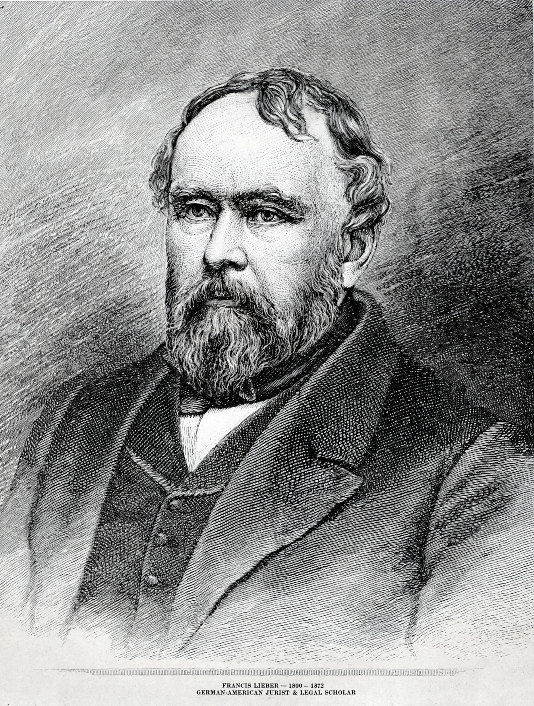

The Lieber Code of April 24, 1863, also known as General Orders No. 100, was the first formal codification of the laws of war, prepared by the German-American legal scholar Francis Lieber and promulgated by President Abraham Lincoln for the Union Army during the American Civil War. Its full title is Instructions for the Government of Armies of the United States in the Field.

The code consists of 157 articles addressing matters including martial law, military jurisdiction, the treatment of prisoners of war, the protection of civilians and their property, and the status of partisans, spies, and deserters. It prohibited torture, the use of poison, and the killing of prisoners, and sought to limit military necessity by the requirements of humanity and the customs of civilised warfare.
The Lieber Code was highly influential on the subsequent development of international humanitarian law. It informed European codification efforts, including the Brussels Declaration of 1874 and the Oxford Manual of 1880, and in turn the Hague Conventions of 1899 and 1907. Many of its principles were later incorporated into the Geneva Conventions of 1949.